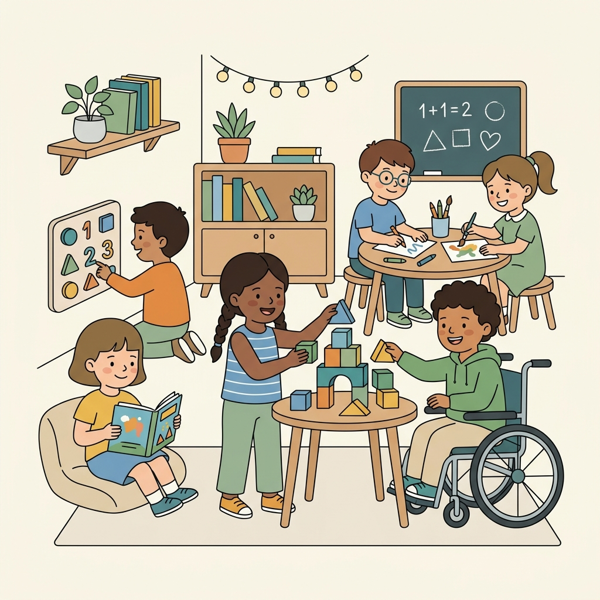

Her Çocuğun Potansiyeli, Keşfediliyor
İZ Özel Eğitim'de, nöroçeşitliliğin bir zenginlik ve güç olduğuna inanıyoruz. Alanında uzman eğitmenlerimiz ve terapistlerimiz, çocuğunuzun kendine özgü öğrenme, büyüme ve gelişme ritmine saygı duyan bireysel eğitim haritaları tasarlar.

Farklı Zihinler İçin Özel Eğitim Çözümleri
Çocuğunuzun kendini güvende hissetmesi, eğitim sürecine aktif katılması ve potansiyelini en üst düzeye çıkarması için tüm imkanlarımızı seferber ediyoruz.
Bireyselleştirilmiş Eğitim Programları (BEP)
Her öğrencimiz için aileler, terapistler ve özel eğitim uzmanları eşliğinde hedeflere yönelik hazırlanan tamamen kişiselleştirilmiş öğrenme yolları sunuyoruz.
Duyu Bütünleme ve Terapi Odaları
Duyusal regülasyonu desteklemek için özel tasarlanmış ışık sistemleri, sakinleştirici melodiler, kabarcık tüpleri ve dokunsal materyaller içeren son teknoloji odalar.
Uzman Terapist ve Eğitimci Kadrosu
Dil ve konuşma, ergoterapi ve davranış terapistlerimiz sınıf içinde öğretmenlerle her an entegre çalışarak gelişim hedeflerini günlük hayata yayarlar.
Burada sadece bir okul değil; oğlumuzun güzel zihnini anlayan, onun benzersiz yapısını kucaklayan ve onunla gurur duyan kocaman bir aile bulduk.
Her Zihnin Kendine Yer Bulduğu Bir Çatı
İZ Özel Eğitim, geleneksel eğitim kalıplarının ötesine geçerek kapsayıcı ve güvenli bir gelişim limanı olmak amacıyla kuruldu. Otizm Spektrum Bozukluğu (OSB), DEHB, disleksi, Down sendromu ve diğer farklı öğrenme profillerine sahip çocuklarımızı sevgiyle kucaklıyoruz.
Terapötik hedefler ders programlarının içine yedirilir; böylece öğrencilerimiz doğal oyun ve eğitim ortamında hedeflerine ulaşırlar.
Sınıflarımızda parlamayan göz dostu aydınlatmalar, ses yalıtımları, görsel iş akışı çizelgeleri ve konforlu alternatif oturma alanları bulunur.
Kabul ve Uyum Yol Haritamız
Özel eğitim süreçlerini planlamak bazen karmaşık gelebilir. Sizi ve çocuğunuzu adım adım bu sürece hazırlıyor ve kolaylaştırıyoruz.
İlk Buluşma ve Gözlem
Çocuğunuzun ilgi duyduğu alanları, iletişim kurma biçimlerini ve duyusal konfor alanlarını anlamak için rahat ve samimi bir tanışma seansı gerçekleştiriyoruz.
Ortak BEP Taslağı Hazırlama
Özel eğitimcilerimiz, ergoterapistlerimiz ve dil terapistlerimiz çocuğunuza özel gelişim hedeflerini belirler ve planı sizinle birlikte detaylandırır.
Sınıf ve Duyu Alanı Uyumlaması
Sınıf içi oturma düzenini, kullanılacak duyusal destekleri ve dokunsal materyalleri çocuğunuzun duyusal ihtiyaçlarına göre birebir uyarlıyoruz.
Kesintisiz Gelişim Takibi
Haftalık gelişim özetleri, görüntülü güncellemeler ve düzenli veli-ekip toplantılarıyla çocuğunuzun attığı her güzel adımdan haberdar olmanızı sağlıyoruz.
Kapsayıcı Kampüsümüzü Ziyaret Edin
Sınıflarımızı, duyu terapi salonlarımızı ve etkileşimli alanlarımızı yakından görmeniz için sizi özel bir okul turuna davet ediyoruz.
Sage Meadow Caddesi No:458, Suite 100, Austin, TX 78746
iletisim@izozelegitim.com
+90 (512) 555-0182